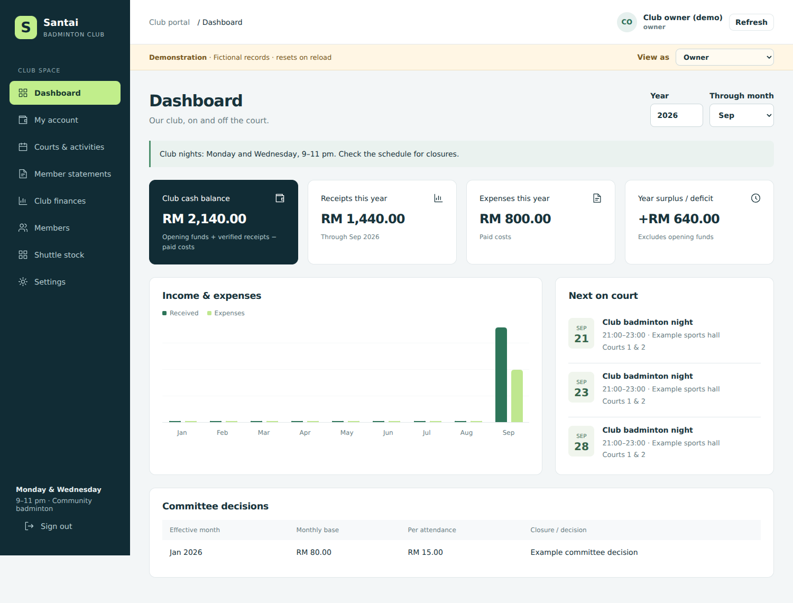

Start here: preview the sample club first, then follow the numbered setup instructions below. Your real records are not connected yet.

Santai Badminton Club v1.1
A club portal for a volunteer-run community badminton club. Source code is editable in VS Code. GitHub stores the code; Firebase Hosting serves the website, Firebase Authentication handles email/password sign-in, and Cloud Firestore holds records and small compressed payment screenshots. No OneDrive or Firebase Storage dependency is added.
Start here
Open DEMO.html directly in Edge to try fictional records without installing anything. Demo changes live in memory and reset when the page reloads. Use the role selector to test Owner, Fee collector, Court coordinator, Shuttle coordinator and Member.
Open START-HERE.html for this guide with screenshots. docs/index.html is the actual website: preview it with VS Code Live Server, not by double-clicking that file. No build step is required for the live source.
Version 1.1 workflows
| Role | Responsibilities |
|---|---|
| Owner | All functions, membership approval, appoint/remove volunteers, bank/QR settings, reverse incorrect payments/expenses, close/reopen years |
| Finance | Fee plans/requests, monthly charges, payment verification, expenses, attendance, opening balances and member statement publication |
| Court coordinator | Monthly schedule, venue/court details, fixtures, tournaments and results |
| Shuttle coordinator | Stock receipts/use/adjustments and replenishment monitoring |
| Member | Own financial account and screenshot records, fee requests, payment reporting, activities, published club statements |
Committee appointments have no mandatory annual expiry. Leave the optional end date blank for ongoing service. Owner can change/revoke responsibilities at any time. Every committee member retains ordinary member functions.
Membership and fees
Permanent membership and billing are separate. In Club finances → Planner, click a month for a member to set their arrangement from that month onward. Choose monthly, attendance, or exempt. The percent entered is the amount payable: 62.5% of RM80 is RM50, equivalent to a 37.5% discount. Factors support fractional percentages.
A plan persists until another plan takes effect. Changes use a month as the billing boundary. Requests made during a month can be approved for that current month or a later one. Where a monthly charge already exists, the approval form requires the revised charge explicitly. Previous attendance charges remain as recorded; correct those individually when necessary. Automatic daily proration is not assumed.
Members use My account → Request fee arrangement. Finance approves or rejects with a reason. Finance may also record a directly agreed arrangement in Planner. Pending requests do not change billing.
Issue fees creates monthly charges using the applicable plan and base rate. Duplicate monthly IDs are skipped. Plans shown in the 12-month grid are forecasts until a fee has been issued (marked with a tick). Account balances and shared statements use issued fees only. Generate the appropriate monthly fees before publishing a period statement.
Rates / closure records the committee's base monthly and attendance rates from an effective month. Initial defaults: RM80 monthly and RM15 attendance. The decision/reason appears to members. Closure applies to the selected month only and prevents new generated fees/sessions and RSVP. Existing sessions are shown closed; charges already issued are NOT silently erased. Use Fees → Correct fee if the committee decides to remove or reduce them.
Court schedule and attendance
Create monthly sessions with Courts & activities → Create monthly court schedule. The app generates Monday and Wednesday, 21:00–23:00 Malaysia time. Review venue details and mark bookings Scheduled once the venue confirms them. The website does not reserve courts with the venue. Repeating the generator skips existing generated sessions.
Finance records actual attendance. An approved attendance plan creates the current per-attendance charge, even for a permanent member. Monthly or exempt plans do not get extra attendance charges. Unregistered walk-ins have their name recorded internally under the shared walk-in account. Use a consistent unique name for each guest within one session; a repeated attendee is rejected. If two different guests have the same name, add a distinguishing initial.
RSVP indicates interest, not a guaranteed reservation or automated capacity limit. Tournament draws and scores are entered as text.
Payments, credits and screenshots
Members scan the genuine bank QR in their banking app and report amount/date/reference. Select either monthly fees/advance or attendance. A monthly transfer can cover several months; it does not need to match one invoice. Positive monthly balance = credit; negative = arrears. Attendance receipts have a separate personal balance and are aggregated as AhliMendatang in shared reports. A transfer covering both buckets must be recorded in two portions with the same reference, whose amounts add to the actual transfer.
A screenshot is optional and may be PNG, JPEG or WebP up to 15 MB on selection. It is resized to at most 1,600 pixels on the longest side, converted to JPEG and limited to 250,000 data-URL characters (roughly 183 KB of compressed image). The preview must remain legible. Crop to the payment confirmation if compression cannot reach the limit. Screenshots are kept as separate private Firestore documents and loaded only when opened; the image field is excluded from indexing by the supplied index configuration. Full-resolution originals and bulk videos are not supported.
Finance checks the screenshot AND bank/cash record before verifying. A screenshot alone never settles a fee. Stable approval IDs and transactions prevent double approval of the same submission. A member can still submit the same external bank reference twice; reviewers must check duplicates against the bank statement. Automatic bank reconciliation is not included.
Owner reversals retain the original payment/expense and reason, and restate that transaction's original reporting month. An incorrect screenshot remains attached to its original submission/entry; reject/reverse it and submit a corrected record, rather than overwrite evidence.
Yearly accounts and statements
Choose the year and month cutoff on Dashboard, My account, Club finances or Member statements. Payments and expenses are included by actual date, considering both year and month.
For initial migration only, record each member's signed opening balance and the club opening cash/bank balance through Planner → Opening balance. Member opening is independent of club cash. After that, prior transactions automatically carry into later years. Do not enter the same carry-forward again each January. A newly entered later-year opening intentionally becomes a new baseline, so use that only for an agreed migration/reconciliation, not routine year-end processing. Existing opening entries cannot be overwritten in this interface; incorrect initial entries need owner-assisted correction before going live.
Owner can close a year in Settings after reconciliation. Closed-year transactions, fees, plans and openings are blocked by Firestore rules. To correct prior history, reopen explicitly. Corrections can alter later carry-forwards, so review affected years and republish statements.
Finance Preview / publish statements creates a deliberate member-visible snapshot for a selected cutoff. This preserves the club's practice of sharing PenyataAhli and Print, rather than exposing the entire committee ledger. The snapshot includes named monthly balances and aggregate attendance income, but omits payment references, screenshots, opening club funds and closing bank/cash totals. The shared net figure is clearly current-year surplus/deficit. The club payment bank details are still available separately where members need to pay.
Members can print/save PDF (landscape) and download the named-balance CSV. Share a PDF or screenshot yourself through WhatsApp; the website does not send WhatsApp messages. Later record corrections do not silently change an already published snapshot: finance republishes when ready. The app keeps the latest snapshot for each year/month; earlier revisions are not separately versioned.
Shuttle stock
Stock quantity is measured in individual shuttlecocks. A tube of 12 means 12 units. Record opening stock, purchases, usage or adjustments. The default low-stock threshold is 24 and the owner can change it. A purchase creates inventory only; finance separately records the paid supplier expense. Opening stock counts are not inferred from past purchase receipts because past usage is unknown.
Firebase / GitHub setup
- Keep a copy of the previous source and download any existing private database backup before upgrading. Do not commit backup data or the uploaded club workbook to GitHub.
- Copy your existing public web app config into
docs/firebase-config.js. If you have no project yet, create one in Firebase Console using the Spark free plan and add a web app. Never place Admin SDK/service-account secrets in browser files. - Enable Email/Password in Firebase Authentication. Set a minimum password length of 10 or more. Members register and verify email before owner approval.
- Create the default Cloud Firestore Standard database in production mode. Publish the supplied
firestore.rulesand applyfirestore.indexes.json. Do not retain v1.0 rules: v1.1 has new role scopes and private screenshot/statement collections. - For command-line deployment, install a supported Node.js release and Firebase CLI. This project includes Firebase CLI as a development dependency. In the extracted project folder, use:
npm ci
npx firebase login
npx firebase use --add
npx firebase deploy --only firestore:rules,firestore:indexes,hosting
Choose your own Firebase project when prompted. The supplied firebase.json already points Hosting to docs/; do not overwrite it with a new initializer. Use Firebase Hosting, not the separate Firebase App Hosting product. On Windows, if PowerShell blocks npx.ps1, run these commands in VS Code's Command Prompt terminal or use npx.cmd.
- Firebase displays the actual hosting URL, normally an address under
web.app. Add the hosted domain to Authentication → Settings → Authorized domains if it is not already there. Add localhost for local authentication testing if needed. - Continue using VS Code Source Control to stage, commit and push the code to GitHub. GitHub remains source/version control; GitHub Pages is not needed for the live portal. Do not publish member workbooks, screenshots or JSON backups in the repository.
- Create your own account through the hosted portal and verify its email. For a NEW installation, find its UID in Firebase Authentication, then update that UID's Firestore
membersdocument in the console:role=owner,status=active,approvedBy= your UID. Keep the other registration-created fields. Sign out/in. Existing owner accounts continue to work. - Enter bank/QR and club notice in Settings. Test the QR beneficiary in your banking app. Add/approve members, assign volunteer responsibilities, enter the agreed opening balances, and set plans before issuing fees.
If v1.0 already contains real records
The same member, charge, payment and expense collections remain in use. Existing v1.0 payments are classified by their linked charge when they lack a bucket field. Their old per-charge paid counters are not used for v1.1 credit calculations; the verified payment ledger is authoritative. Existing member discounts provide a default until replaced with a dated plan. Existing optional committee expiry dates remain as stored: clear them in Manage Member if the appointment should continue indefinitely.
The old summaries/all club opening amount must be entered once under Opening balance → Club for the original start year, after reconciliation. The app warns finance if it detects this unmigrated v1.0 opening. Do not enter last year's closing cash again if its transactions are already represented. Existing pending v1.0 submissions use the older charge-specific shape: reject/re-submit them in v1.1 after checking they have not already been paid. Do not mix old and new website versions against the live database after upgrading rules.
Before inviting members back, compare totals with the v1.0 backup and publish the desired member snapshots. No Excel history has been imported automatically. Historical migration needs the owner's resolved source rows and actual login mappings.
Free-plan storage and limits
Firebase Spark provides a limited free Firestore quota. Compressed screenshots consume this quota: at the 250,000-character cap, 360 screenshots per year would use roughly 90 MB for the image text alone, plus document/index overhead and other records. Actual images may be smaller; more attendance screenshots increase the number. This is an estimate, not a guarantee of indefinite free retention. Monitor storage and reads, and agree a retention/archive policy before limits are approached. No automatic deletion has been added.
Firestore is being used here for a small club's bounded images, not general file hosting. Cloud Storage for Firebase would require a billing-enabled plan. Proof images are not fetched on dashboard refresh. An explicit owner full backup includes all screenshots and can grow large; keep it private. Automated restore, OneDrive integration, bank APIs and automated backup scheduling are not included.
Finance roles are trusted bookkeepers. Transactions and rules enforce account access and year locks, but application logs are not a tamper-proof audit of changes made directly by a Firebase project administrator. Keep bank reconciliation and private backups.
The current release loads authorised history on Refresh. For a growing multi-year club, add date-window pagination before record counts substantially increase. Never expose private member data merely by hiding a table column: the member-facing publication is a separate database record with separate access rules.
Tests
npm test
npm run test:rules
The rule tests require Java and use a local demo-santai Firestore emulator, not your live project. Negative permission tests intentionally log permission-denied responses. See VERIFICATION.md for completed checks and production checks still needed.
Sources
This source package contains fictional demonstration records only. Keep the separate private workbook review outside the public repository.